クリックしてゴメサンタからクリスマスプレゼントを受け取る▼
| 投票は締め切りました。たくさんの参加ありがとうございました。投票結果はこちら |
「VIPRPG紅白」は、ニュー速VIP板内のRPGツクールスレッドで開催されているツクール作品を持ち寄るお祭り企画です。
感想を付け合う事を目的としており、例年は年末年始に開催されます。
Ctri+F5を押すと必殺技「スーパーリロード」で最新の状態になるぞ！
| No.01 ナイトメアルーラーズ【WIP】 ★1/27 本体更新 |
No.02 好きなキャラ100人以上とばとる -体験版- ★2/2 本体更新 |
No.03 2005～25キャラ歴史まとめ  ★12/13 提出済み |
No.04 星路ホームウェイ -エターなった作品を完成させたHoly,s- 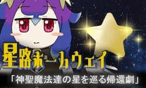 ★12/19 提出済み |
No.05 イセカイに吹く涼風 ★12/23 提出済み(作者itchにて) 【エッッ】 |
| No.06 みんなで新コンテンツに遊びに行った話 ★12/11 提出済み |
No.07 MOSHIMO CLASH -THE VSシリーズ- β版 ★1/12 本体更新 |
No.08 京都葡萄園 ★12/23 提出済み |
No.09 人斬りと信仰の噺 ★12/11 エントリー 【エッッ】 |
No.10 デスリスト ★12/28 本体更新 |
| No.11 東京武闘変 OVA版 ★12/23 提出済み |
No.12 タイガーボードVS AICG集  ★12/13 エントリー 【翻訳×】 |
No.13 自分で選べばいいじゃない 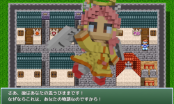 ★12/31 本体更新 |
No.14 年越せわんこそばksg 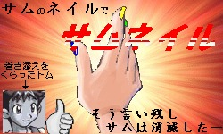 ★12/23 提出済み |
No.15 メゾンドゥース 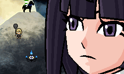 ★12/26 提出済み |
| No.16 ー ★12/17 公開停止 |
No.17 それゆけ！ファイアちゃんのお宝探索ゲーム 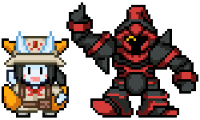 ★12/14 提出済み 【投票不可】 |
No.18 パイロットフィルム ★12/14 提出済み 【ちくちく言葉×】 |
No.19 ショタコンクエスト〜選ばれし12人のショタ〜 ★1/28 本体更新 |
No.20 メグリメグルタマシイ 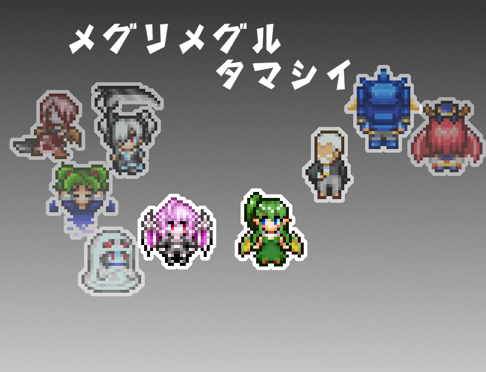 ★12/26 提出済み |
| No.21 ksgの鼓動は愛 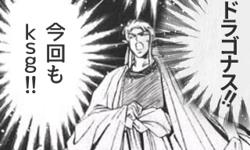 ★12/24 提出済み |
No.22 極★田中物語MINI ★12/23 提出済み |
No.23 RAKUGAKI KUESUTO ★12/23 提出済み |
No.24 反テヌキ勢力天誅任務 ★12/31 本体更新 |
No.25 とある島の異変と冒険記～アルベール～ 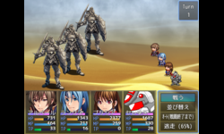 ★1/27 zip版提出 |
| No.26 セルヴズ(α版) 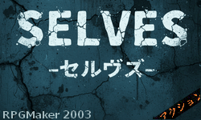 ★1/25 本体更新 |
No.27 ウラ！魔導物語 -魔導王が遺したもの- 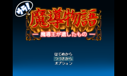 ★2/2 本体更新 |
No.28 薄汚れた勇者と僧侶の手記：Director's Cut 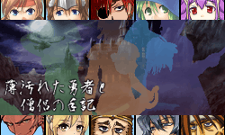 ★2/2 提出済み |
No.29 ホワイトチョコとイチゴの香り 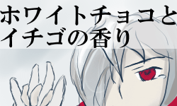 ★12/17 提出済み |
No.30 ヤマトナデシコ七変化 ★12/19 提出済み |
| No.31 玉露軍パズル ★2/15 本体更新 【翻訳×】 |
No.32（仮題） 大長編！ドラゴなすーんと世界新秩序の秘密 ★12/23 エントリー 【エッッ】 |
No.33 ずっとこんな冒険がしたいと思ってたＲＰＧ 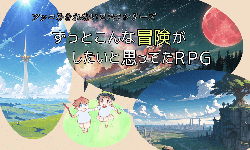 ★12/24 提出済み |
No.34 piclayout 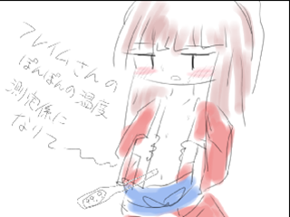 ★12/24 提出済み |
No.35 このksgはプロモーションを含みます ★12/28 本体更新 【投票不可】 |
| No.36 玉露20thアニバーサリー!!! ★2/2 本体更新 |
No.37 Gyokuro Tribute Phase.0 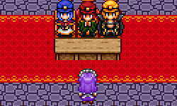 ★1/28 提出済み 【配信動画翻訳×】【投票不可】 |
No.38 今一ＤＲＰＧ 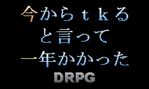 ★2/2 本体更新 |
No.39 スノコをそろえるゲーム 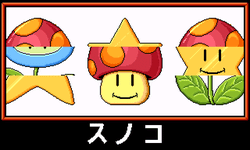 ★12/31 提出済み |
No.40 もしも調理ギルドが設立されたら ★1/5 提出済み |
| No.41 逃げろブラックサンダー＆王様 ★1/20 本体更新 |
No.42 オルガクエストver0.2 ★1/8 提出済み 【配信動画翻訳×】【投票不可】 |
No.43 INFINITE ECHOES ADVANCE 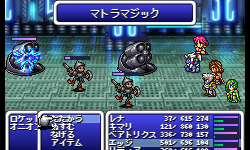 ★1/27 本体更新 【配信・動画での収益化不可】 |
No.44 雨の日に見た想月 試遊版 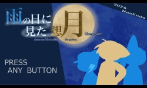 ★2/15 本体更新 |
No.45 アルベルトのおしっこクエスト ★1/20 提出済み |
| No.46 ラディーのエイスケ救出大作戦 完全版 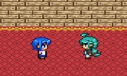 ★1/22 提出済み |
No.47 締め切り5日前くらいに生えたksg 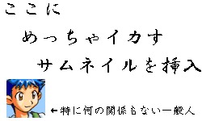 ★1/27 提出済み |
No.48 ※音ゲーではありません 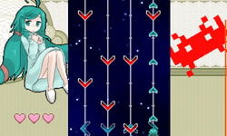 ★2/2 提出済み |
No.49 スピブレちゃんとデートする話。 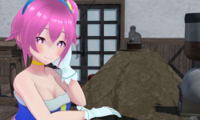 ★2/2 提出済み |
No.50 Untitled ★2/2 提出済み |
| ・スケジュール（予定） |
| 2025.12/10～ エントリー・受付開始 2025.12/10～ 作品提出・受付開始 2025.12/24～ 作品公開・遅刻作品受付開始 2026.1/31 作品提出・更新終了 2025.12/24～2026.1/31 投票可能期間 2025.2/未 集計・表彰 |